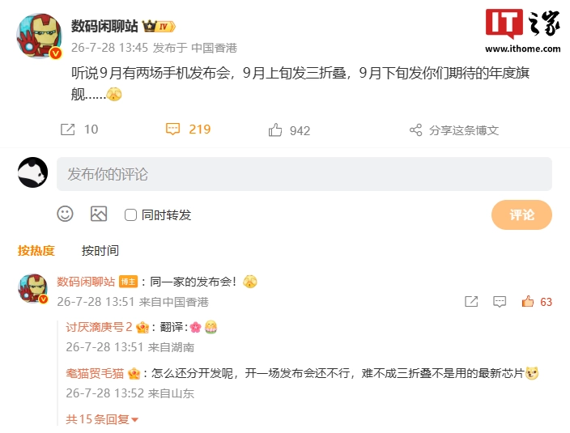
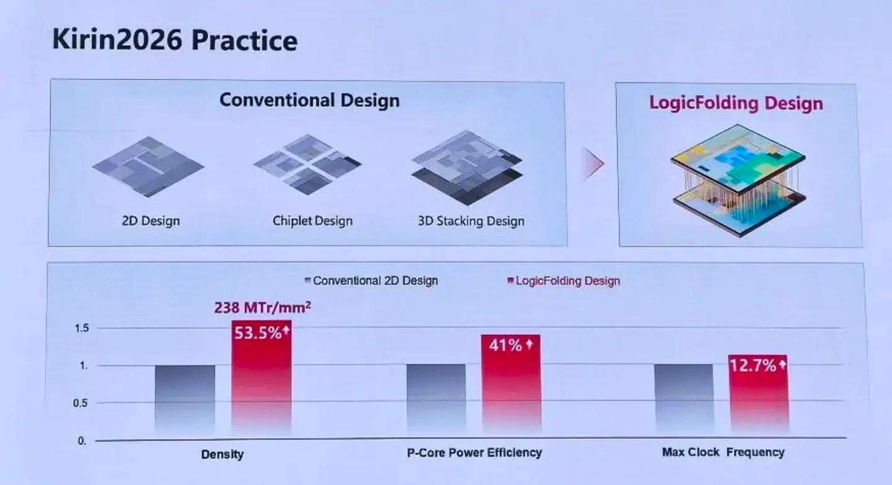

디스플레이 사양
블로거 @数码闲聊站이 특정 브랜드의 연례 플래그십 스마트폰에 대한 디스플레이 사양을 공개했습니다.
- 6.9인치 1.5K LTPO 바 타입
- Tandem 듀얼 OLED 기술 및 BT.2020 색 영역 지원
- 전면 카메라 펀치홀 형태 유지
- 대형 R 코너 와이드 스크린
- 개발용 기기(Engineering Sample)에 적용된 BOE 패널
예상 모델 및 출시 일정
블로거의 과거 정보와 커뮤니티 반응을 종합할 때, 이번에 공개된 신제품은 Huawei Mate 90 Pro Max 또는 RS Master Edition일 것으로 예상됩니다.
해당 기기의 배터리 용량에 대한 문의에 대해 블로저는 "6800~7000mAh 사이에서 소폭 변동이 있을 것"이라고 답변했습니다.
앞선 보도에 따르면, Huawei는 9월 초에 Mate XT2 트라이폴드 스마트폰을 먼저 출시하고, 9월 하순에 Mate 90 시리즈 플래그십 스마트폰을 출시할 예정입니다.
성능 및 프로세서
올해의 Huawei 플래그십인 Mate 90 시리즈는 '타우(τ) 법칙'에 기반한 새로운 Kirin 칩셋을 탑재할 것으로 예상됩니다. 이번 세대 모델은 전체적인 사양을 칩셋과 카메라 기능에 집중하며, 배터리 용량도 일반적인 수준으로 업그레이드될 전망입니다.
Huawei의 반도체 부문 사장 He Tingbo는 '타우(τ) 법칙'을 통해 제안된 새로운 반도체 진화 경로를 발표했습니다. 올해 가을 출시될 Kirin 칩은 LogicFolding 기술을 최초로 채택하여 성능을 크게 향상시켰습니다.
- 기존 2D 설계 대비 트랜지스터 밀도 53.5% 향상 (238 MTr/mm²)
- P 코어 효율 41% 향상
- 피크 주파수 12.7% 향상
총평
Huawei의 차기 플래그십 Mate 90 시리즈는 고성능 Tandem 듀얼 OLED 디스플레이와 '타우(τ) 법칙' 및 LogicFolding 기술이 적용된 새로운 Kirin 칩셋을 탑재할 예정입니다. 이번 모델은 특히 프로세서 성능과 카메라 시스템 강화에 중점을 두고 있습니다.
屏幕与硬件参数
博主披露了华为年度旗舰手机的初步屏幕规格，预计该机型可能为 Huawei Mate 90 Pro Max 或 RS 非凡大师。相关核心参数如下：
- 尺寸：6.9 英寸
- 分辨率与类型：1.5K LTPO 巴（bar）类型
- 技术工艺：Tandem 双层 OLED 技术，支持 BT.2020 色域
- 面板供应商：BOE
- 外观设计：前摄人脸开孔，大 R 角宽屏
- 电池容量：预计在 6800-7000mAh 之间
发布计划与机型预测
根据相关爆料，Huawei 预计于 9 月上旬发布 Mate XT2 三折叠手机，并于 9 月下旬发布 Mate 90 系列年度旗舰。该系列产品将重点向芯片性能和影像系统倾斜，同时在电池容量上进行常规升级。
核心芯片与“韬（τ）定律”
新一代 Huawei 麒麟芯片将采用基于“韬（τ）定律”的逻辑折叠（LogicFolding）技术。相比传统的 2D 设计芯片，该技术的性能提升显著：
- 晶体管密度：提升 53.5%，达到 238 MTr / mm²
- P 核能效：提升 41%
- 峰值频率：提升 12.7%
总结
华为即将于 9 月下旬发布 Mate 90 系列旗舰手机，该机型预计搭载采用“逻辑折叠”技术的全新麒麟芯片。新机将配备 6.9 英寸 Tandem 双层 OLED 屏幕及大容量电池，在性能与影像方面有显著提升。
ディスプレイ仕様
ブロガー @数码闲聊站 が、特定のブランドの年次フラッグシップスマートフォンに関するディスプレイ仕様を公開しました。
- 6.9インチ 1.5K LTPO バータイプ
- Tandem デュアル OLED 技術および BT.2020 色域サポート
- フロントカメラのパンチホール形状を維持
- 大型 R コーナー ワイドスクリーン
- 開発用デバイス（Engineering Sample）に採用された BOE パネル
予想モデルおよび発売スケジュール
ブロガーの過去の情報やコミュニティの反応を総合すると、今回公開された新製品は Huawei Mate 90 Pro Max または RS Master Edition と予想されます。
このデバイスのバッテリー容量に関する問い合わせに対し、ブロガーは「6800〜7000mAhの間でわずかに変動がある」と回答しています。
先行報道によると、Huawei は 9 月上旬に Mate XT2 トリプル折りたたみスマートフォンを先行発売し、9 月下旬に Mate 90 シリーズのフラッグシップスマートフォンを発売する予定です。
性能およびプロセッサ
今年の Huawei フラッグシップである Mate 90 シリーズは、「タウ（τ）の法則」に基づいた新しい Kirin チップセットを搭載する見込みです。この世代のモデルは、チップセットとカメラ機能に焦点を当てた全体的な仕様を備え、バッテリー容量も標準的なレベルまでアップグレードされる見通しです。
Huawei の半導体部門責任者である He Tingbo は、「タウ（τ）の法則」を通じて提案された新しい半導体の進化経路を発表しました。今年の秋にリリースされる Kirin チップは、LogicFolding 技術を初めて採用し、性能を大幅に向上させています。
- 従来の 2D 設計と比較してトランジスタ密度が 53.5% 向上（238 MTr/mm²）
- Pコアの効率が 41% 向上
- ピーク周波数が 12.7% 向上
総評
Huawei の次期フラッグシップ Mate 90 シリーズは、高性能な Tandem デュアル OLED ディスプレイと、「タウ（τ）の法則」および LogicFolding 技術を適用した新しい Kirin チップセットを搭載する予定です。このモデルは特にプロセッサの性能とカメラシステムの強化に重点を置いています。
まとめ
Huawei の次期フラッグシップ Mate 90 シリーズは、Tandem デュアル OLED ディスプレイと LogicFolding 技術を採用した新 Kirin チップセットにより、処理能力とカメラ機能を大幅に強化する見込みです。9月下旬の発売に向け、高度な半導体技術による性能向上と高品質なディスプレイ体験の両立を目指しています。
Display Specifications
Blogger @数码闲聊站 has revealed the display specifications for an upcoming flagship smartphone from a major brand.
- 6.9-inch 1.5K LTPO bar type
- Tandem dual OLED technology and BT.2020 color gamut support
- Front camera punch-hole design
- Large R corner wide screen
- BOE panel used in Engineering Samples (ES)
Expected Model and Release Schedule
Based on the blogger's past information and community reactions, the newly revealed device is expected to be the Huawei Mate 90 Pro Max or RS Master Edition.
In response to inquiries regarding battery capacity, the blogger stated that it would "vary slightly between 6800mAh and 7000mAh."
According to previous reports, Huawei plans to launch the Mate XT2 tri-fold smartphone in early September, followed by the Mate 90 series flagship smartphones in late September.
Performance and Processor
The Mate 90 series, this year's Huawei flagship, is expected to feature a new Kirin chipset based on the "Tau (τ) Law." This generation will focus on overall specifications centered on the chipset and camera functions, with battery capacity upgraded to standard levels.
He Tingbo, President of Huawei’s semiconductor division, announced a new semiconductor evolution path through the "Tau (τ) Law." The Kirin chips launching this fall will adopt LogicFolding technology for the first time to significantly enhance performance.
- 53.5% increase in transistor density compared to existing 2D designs (238 MTr/mm²)
- 41% improvement in P-core efficiency
- 12.7% increase in peak frequency
Overall Review
Huawei's upcoming Mate 90 series is expected to feature a high-performance Tandem dual OLED display and a new Kirin chipset utilizing the "Tau (τ) Law" and LogicFolding technology. This model focuses specifically on enhancing processor performance and the camera system.
Summary
The upcoming Huawei Mate 90 series is expected to feature high-end Tandem dual OLED display technology and a new Kirin chipset powered by LogicFolding technology. The device will focus heavily on improving processing power and camera capabilities, with a release scheduled for late September.


